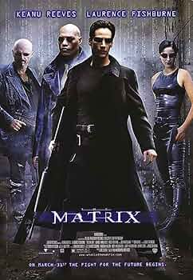

Director: Quentin Tarantino
Reparto: John Travolta, Uma Thurman, Samuel L. Jackson
Sinopsis: Historias entrelazadas de crimen y redención en Los Ángeles, narradas con estilo característico.
Director: Francis Ford Coppola
Reparto: Marlon Brando, Al Pacino, James Caan
Sinopsis: La saga épica de la familia Corleone y su poder dentro del crimen organizado en Nueva York.
Director: Wachowski Sisters
Reparto: Keanu Reeves, Carrie-Anne Moss, Laurence Fishburne
Sinopsis: Un hacker descubre la verdad sobre la realidad y se une a una rebelión contra las máquinas.